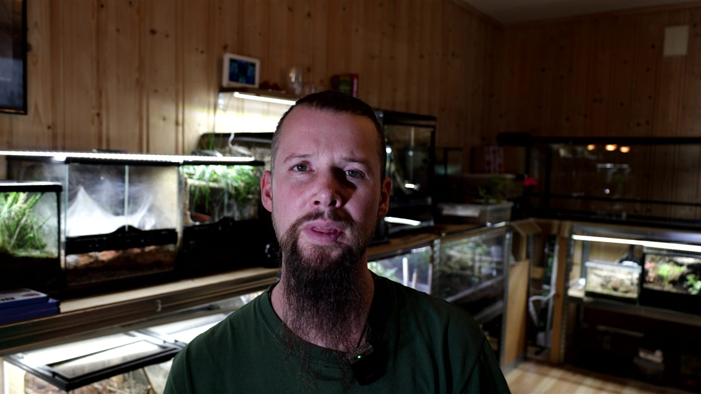

Made in Norwegian
The channel speaks directly to Norwegian-speaking children, with language and storytelling shaped around a young home audience.
Dyr og natur på norskNorsk dyre- og naturkanal · For barn
En norsk kanal om dyr og natur – laget for nysgjerrige barn.
Kryp & Krabater is a Norwegian-language animal and nature channel for children. Through friendly films, close encounters, and clear stories, it makes spiders, insects, reptiles, wildlife, and their habitats exciting rather than intimidating.

What it is
Kryp & Krabater shares the same respect for animals as Introvertebrates, but speaks to a younger Norwegian audience through shorter, friendlier, story-led films.
The channel speaks directly to Norwegian-speaking children, with language and storytelling shaped around a young home audience.
Dyr og natur på norskUnfamiliar animals are introduced clearly and without sensationalism, helping children replace fear with questions, observation, and respect.
Friendly, accurate storytellingSpiders and insects sit beside reptiles, birds, mammals, wildlife encounters, and the habitats that connect them.
Small creatures, big storiesStories for young viewers
The channel turns striking animal moments into approachable questions a child can carry into the garden, the woods, or the next encounter.
A story about the construction of a tarantula retreat can connect directly to anatomy, silk, and the relevant resident profile.
A myth-clearing short can distinguish venom, toxicity, defensive behaviour, and actual human risk without sensationalism.
The Mexican red-knee short belongs beside Sabrina’s profile, her gallery, and her personal Codex history.
A sensory-hair story can lead from a striking close-up into the anatomy guide and published research.

Related, but distinct
Introvertebrates offers detailed profiles, research, and keeper records for older readers and enthusiasts. Kryp & Krabater brings that same curiosity to Norwegian children through welcoming films and simple stories. The projects can enrich one another without becoming the same thing.